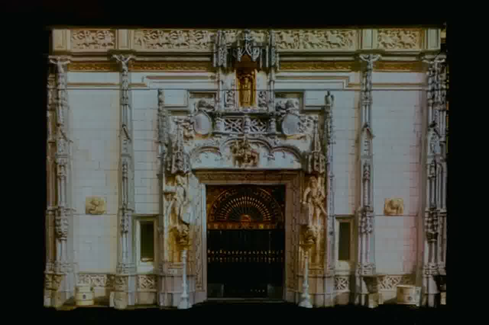

Numbered blocks = recognized stimuli · gray = wait / baseline.
Display
Timeline
Stimulus video
Participant data
Data view
Stimulus, gaze, trail, cumulative gaze density, and persistent affective gaze memory

No active stimulus
Original participant video
Independent reference
Add P12.mov to the
videos folder to view the original recording.00:00 / 00:00
Participant & Recording
Loading participant data…
Stimulus04:19.0
Participant—
Video placed—
Outside stimulus—
Affective data—
Affective data
Synchronized by the participant recording timestamp. Invalid/inactive values are treated as missing.
Move the synchronized timeline to inspect affective values.
Affective prominence by stimulus zone
Dominant cumulative affective response for each synchronized stimulus zone.
Current state
Visual / gaze
- Stimulus
- None
- Gaze X
- —
- Gaze Y
- —
- Confidence
- —
- Fixation
- —
- Sample
- —
Affective state
- Focus
- —
- Engagement
- —
- Excitement
- —
- Interest
- —
- Relaxation
- —
- Stress
- —
Synchronization
Not scoredOffset = recording time − stimulus-video time.
Video —Recording —
Auto-sync tests fixation responses against all eight known stimulus zones.
Surface mapping
The four points map normalized Pupil Surface coordinates onto the canonical façade.